三. 找回自己I Found Myself
1. in Wonderland
提起2013年2月10号格莱美上TS的开场演出，人们总是想起她在"diss HS"，往往忽略了那场她真正的亮点，她的整个舞台是以Alice in Wonderland为主题的，报道1，报道2。
{kind=link}
{kind=link}
2月10号，格莱美当晚，DA发推说“你们都看了格莱美吧？”，别人看没看不知道，TS的开场她肯定是看到了。
{kind=link}
*************背景提示*************
Di粉都知道DA非常喜欢Alice in Wonderland，喜欢到什么程度呢
她的Tumblr账号是felldowntherabbithole，掉进兔子洞

她左侧腰部附近有一个纹身we're all mad here，这句是爱丽丝梦游仙境中最经典的台词，发生在Alice和Cheshire cat的对话间
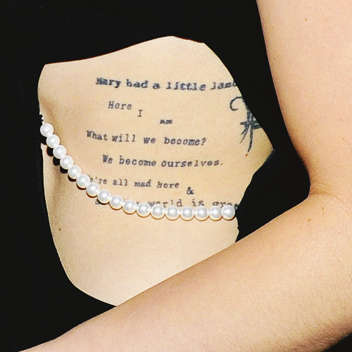是不是很眼熟，TS后来写的Wonderland中也有Fell down a rabbit hole，也有Cheshire cat，也有we both went mad。
*************提示结束*************
不仅是格莱美上演唱WANEGBT用了Alice in Wonderland做主题，在RED巡演中，作为压轴曲的WANEGBT，舞台和装扮依然是用Alice in Wonderland。
WANEGBT的剧情和Alice in Wonderland有什么关系吗？显然是没有的，只能是TS本人在那段时间非常偏爱爱丽丝梦游仙境这部作品。
可是到了1989时代， 85场演唱会她只唱了3次Wonderland，这么明显的先宠后冷不会没有原因。
2月11号，22的MV拍摄，参与拍摄的有Ashley，Claire，Marisha Mae，Chelsea Lankes，Sarah Barlow，Jessica Szohr和Addison Timlin。
出镜的这7个人的构成成分：
Ashley，Claire不用说了；
Marisha Mae，Chelsea Lankes，Sarah Barlow是TS在纳什维尔的好朋友，前两个也是音乐人，Sarah Barlow是摄影师，RED专辑、单曲的封面内页就是她拍的，平时也帮TS拍过很多照片，拍摄花絮中有提到；
Jessica Szohr，Addison Timlin是DA的多年好友，Jessica是演员（< Gossip Girls >中的Vanessa），12年3月31号TS没有参加KCA的after party就是去DA家参加Jessica的生日party，Addison Timlin也是演员，在DA参演Glee（08年）之前就已经是她的好朋友，这两人之与DA就相当于Selena、Emma Stone之与TS；
那张出现在Club RED，拍摄于12年12月6号的照片中，TS身边的Kelly Straw和Jessica Stam也是DA的好朋友。
{kind=link}
TS和DA一起公开露面的次数很少，合影更是屈指可数，可是却能看到这两个人的朋友圈在融合。2014-15年，我们也看见KK的好友出现在TS身边，TS的老朋友们和KK相处融洽。
22隐藏信息中提到的4个人是：Ashley、Dianna、Claire、Selena，Dianna和Selena都没有参加拍摄。DA当天在LA，也没有工作任务，但她没去拍22。现在不知道是TS或KK的胆子大了，还是她动员力强了，< 22 >找了7个朋友来捧场还是没有让DA露面，< Bad Blood >喊了17个朋友帮忙终于留下了KK的影像。
（DA虽然没露面，但是TS在MV中戴着猫耳朵）
2月14号，情人节，TS发推：有个Glee的线人告诉我，“今晚去看剧-我们要唱你的歌”，我希望这消息是真的>o<
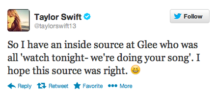这个线人只能是DA了，Glee剧组的其他人可不会这么坏心眼（有情趣）的耍TS玩，这是情人节，不是愚人节。
之后的剧情当然是TS很期待的去看了当晚的Glee（S04E14，"I Do"），不过这集根本没有唱或播她的歌，这可是情人节特别版，Quinn（DA剧中角色）和Santana（女）滚了床单，图1，图2。
{kind=link}
{kind=link}
亲爱的Dianna，情人节这天骗TS去看你滚床单，还是和一个女人滚，还告诉TS这是"doing your song"，你真是太坏了……
看完这集TS赶紧把前面那条推删了，重新发了一条，贴了3月份即将开始的RED巡演中的伴舞伴唱们，说这些人是自己情人节的小伙伴（谁信？）
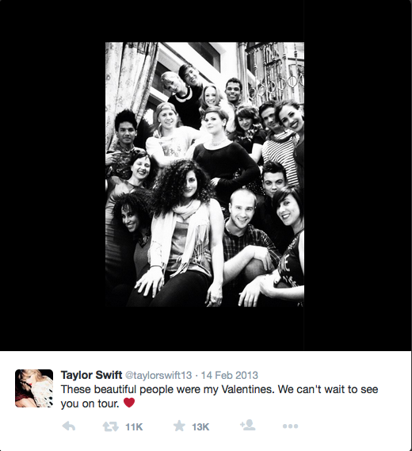可惜删慢了哟，大家都看到了。底下有粉丝留言：
“Taylor，我们是要假装你前一条推从没发过吗，行，没问题~”
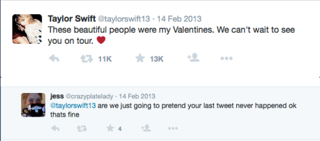3月13号，RED巡演开始。
4月16号，社交平台上出现一则假新闻，如下图（不确定这是真的媒体爆料还是网友P图），却在社交平台上病毒式传播开来，图1，图2，图3。
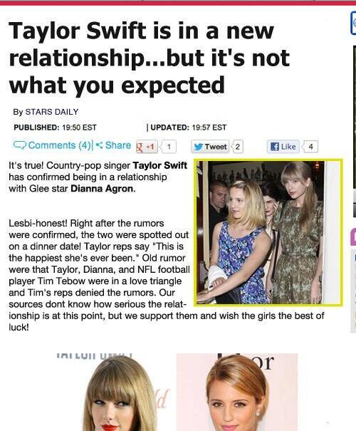{kind=link}
{kind=link}
{kind=link}
4月19号，DA牵着她的“男朋友”Christian Cooke出席意大利威尼斯的Louis Vuitton开张仪式。
4月23号，英国女演员Dakota Blue Richards发推说：
"So apparently Taylor Swift and Dianna Agron are dating"
“很显然TS和DA在dating”
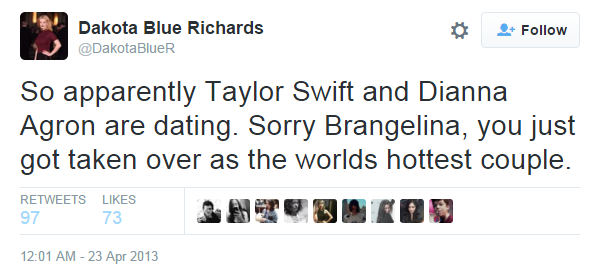当天，DA关闭了自己的Tumblr账号，留下最后一段话：
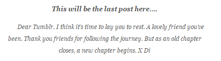This will be the last post here …
Dear Tumblr. I think it's time to lay you to rest. A lovely friend you've been. Thank you friends for following the journey. But as an old chapter closes, a new chapter begin. X Di
DA的粉丝都很惊讶。有人猜是不是因为DA要离开Glee所以关闭了Tumblr，这个说法马上被否定，她的Tumblr很少提及Glee，发的都是私人的或者You, me & Charlie的内容，她也早就不是Glee的常驻角色，这一季里她的出场已经很少，如果和Glee有关她早就该关闭了，讨论到最后大家还是不知道她突然关闭Tumblr的原因。
*************背景提示*************
"You, Me & Charlie" is all about finding inspiration through different kinds of art. Founded by Dianna Agron.
"You, Me & Charlie"是Dianna Agron在2011年成立的一个大家一起寻找和分享一些比较灵的（图片、书籍、音乐、视频、动画、建筑等不同形式）艺术作品的一个平台。
前面说过TS和DA都是文艺少女，有同样的音乐品味，都擅长玩文字游戏。举几个音乐品味相同的例子：
WANEGBT中不是有一句"And you would hide away and find your peace of mind with some indie record that's much cooler than mine"嘛
BBC Radio1让TS推荐一些"Much Cooler Than Mine"的独立音乐，3月3号TS推荐了MS MR的Fantasy，BBC夸她好品味
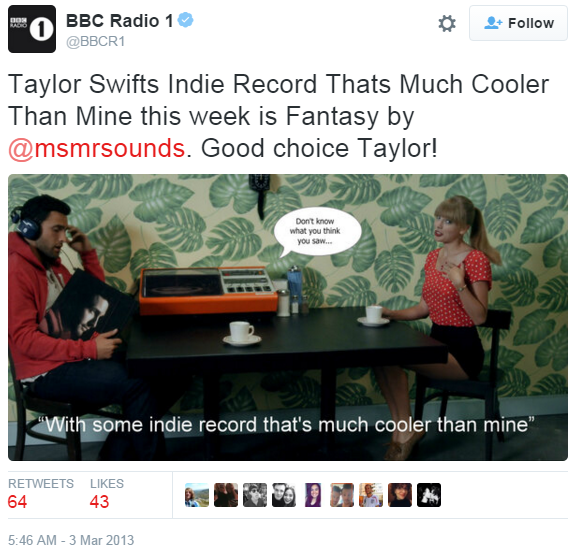这首歌2月6号DA在You, Me & Charlie上也推荐过
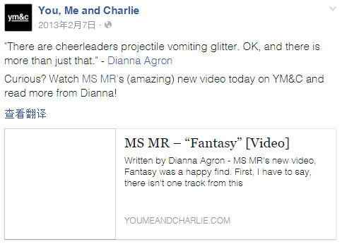13年10月1号，Lorde在谈到TS时说她"too flawless and unattainable"，被传是在diss TS，随后解释自己不是这个意思。DA在10月5号发推说正在听Lorde的歌，之后我们都知道了，到了年底Lorde就成为TS的朋友。
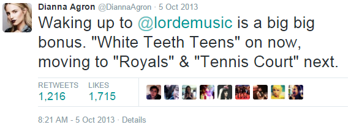14年1月27号，DA在推上和朋友说到听Imogen Heap的歌，14年2月8号TS邀请Imogen Heap和她一起合作完成Clean。
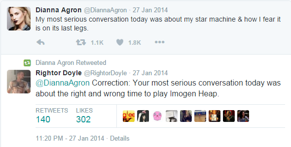14年2月10号，DA在推上说在听Vance Joy的Riptide，还说"Closest thing to Michelle Pfeiller that I've ever seen" "I've got a lump in my throat cuz you're gonna song words wrong"这两句词Make me smile（Michelle Pfeiller与DA一起出演电影The Family，就是12年DA在法国拍了3个月的那部）
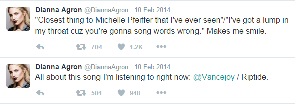14年10月9号TS在BBC Radio 1 Live Lounge上翻唱这首Riptide，全程带着迷之微笑。因为Michelle Pfeiller和KK有些神似，歌词中又有"This guy decides to quit his job and heads to New York City"，TS没有改人称代词直接用男性视角唱着"Lady, running down to the riptide, I wanna be your left hand man"，这首歌后来就成了Kaylor神曲，Vance Joy也在1989巡演中成为固定开场嘉宾。
（当然这都是后话了）
*************提示结束*************
回到13年4月。
DA和TS的关系哪怕之前一直有媒体人含沙射影，终归是没有被点破。
4月16号的假新闻第一次将她和TS抛到了公众面前，即使那则假新闻里并没有任何实际爆料，即使没有多少人相信，但是，很多事平时大家没往那方向去看去想，一旦被人提醒了去看了去想了去深扒了，就像掉进了兔子洞，打开了新世界的大门。这个假新闻就是一个提醒。
不同于16号社交平台上的假新闻，23号英国演员发的推就是同行爆料了，火上浇油。当天，DA关闭了Tumblr。
2014年2月9号写的Clean中有个关键的时间点
10 months sober, I must admit
Just because you're clean don't mean you don't miss it
10 months older, I won't give in
Now that I'm clean I'm never gonna risk it
10个月前就是2013年4月。
那几天她们之间发生了什么不得而知，我们只知道，一个月后TS写了I Wish You Would， 在歌词中我们看到，争吵、挂电话、离开、后悔、思念……
Swiftgron正走向末路
as an old chapter closes, a new chapter begin —— DA Tumblr's last post
You say it's in the past, you drive straight ahead
You're thinking that I hate you now
Cause you still don't know what I never said
I wish you would come back —— < I Wish You Would >
4月30号是DA生日，TS的RED巡演从4月28号到5月3号空出了6天的休演期。TS能在筹备演唱会时将压轴的WANEGBT设计成Alice in Wonderland的造型，她一样能在安排行程时将DA生日这几天空出来。
与上一年TS穿着性感小猫造型惊艳亮相DA生日party不同，受绯闻风波的影响，两人闹翻，这次DA生日很低调，TS也没有出现。
I REACHED FOR YOU BUT YOU WERE GONE
I KNEW I HAD TO GO BACK HOME
YOU SEARCH THE WORLD FOR SOMETHING ELSE TO MAKE YOU FEEL LIKE WHAT WE HAD
AND IN THE END IN WONDERLAND WE BOTH WENT MAD